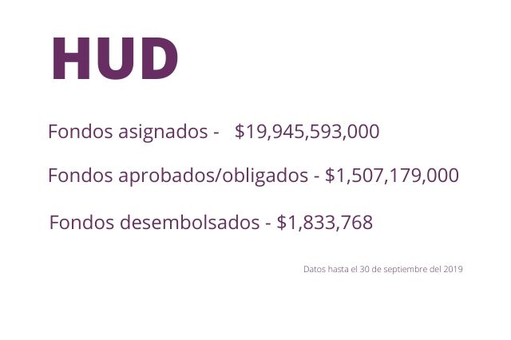

El Departamento de Vivienda y Desarrollo Urbano de los Estados Unidos (HUD, por sus siglas en inglés) es la agencia federal de supervisión para estos fondos, que se administran a través de su Subvención en Bloque para el Desarrollo Comunitario – Recuperación ante Desastres (CDBG-DR, por sus siglas en inglés). El 1 de febrero de 2018, el Congreso de los Estados Unidos le asignó a Puerto Rico $1,500 millones en fondos CDBG-DR. El 10 de abril de 2018, el Congreso designó $18,500 millones adicionales en fondos de recuperación, incluidos fondos dirigidos para el sistema eléctrico y actividades de mitigación.
6 de septiembre del 2017 - El huracán Irma llegó a Puerto Rico como categoría 5 con vientos de más de 100 millas por hora.
20 de septiembre del 2017 - Dos semanas después, el huracán María atravesó la Isla como categoría 4. Tuvo vientos récord de 155 millas por hora, desbordamientos de ríos, deslizamientos de tierra, e inundaciones catastróficas que llegaron hasta las 38 pulgadas.
1ro de febrero del 2018 - El Departamento de Vivienda y Desarrollo Urbano de los Estados Unidos (HUD) otorgó $1,500 millones para ayudar a Puerto Rico a recuperarse de los Huracanes Irma y María. La subsecretaria de HUD Pamela Hughes Patenaude anunció los subsidios de recuperación de desastres con el gobernador Rosselló, durante su tercera visita a Puerto Rico después de los huracanes Irma y María.
Se comienza la elaboración del plan de acción para poder accesar a esos fondos.
10 de abril del 2018 - HUD otorgó la suma récord de $18,500 millones para apoyar la recuperación a largo plazo de Puerto Rico. La subsecretaria de HUD Pamela Hughes Patenaude anunció los subsidios de recuperación de desastre junto al gobernador Ricardo Rosselló y la congresista Jenniffer González-Colón.
27 de abril del 2018 - El Gobierno de Puerto Rico presentará un Plan de Acción para el uso de los fondos CDBG-DR.
7 de mayo del 2018 - El gobernador Rosselló presentó el borrador del Plan de Acción necesario para utilizar los $1,500 millones en fondos CDBG-DR.
30 de julio del 2018 - HUD aprobó el Plan de Acción sometido por el Departamento de la Vivienda de Puerto Rico, que consta de 19 programas.
20 de agosto del 2018 - La notificación de la asignación de $8,220,783,000 en fondos CDBG-DR para Puerto Rico se publica en el registro federal. Vivienda comienza elaboración para enmienda sustancial al Plan de Acción.
20 de septiembre del 2018 - El secretario de HUD, Ben Carson, y el gobernador Rosselló firmaron el “grant agreement” de los $1,500 millones. La subsecretaria de HUD, Pamela Hughes Patenaude, el secretario de Vivienda, Fernando Gil-Enseñat y la comisionada residente González-Colón estuvieron presentes.
28 de noviembre del 2018 - El gobernador Rosselló anunció la firma de un acuerdo interangencial entre el Departamento de la Vivienda y el Departamento de Desarrollo Económico y Comercio (DDEC) para facilitar el proceso de manejo y utilización de los fondos CDBG-DR.
12 de diciembre del 2018 - El Nuevo Día publicó una historia en la que un funcionario federal establece que Puerto Rico no está preparado para recibir los fondos CDBG-DR.
17 de diciembre del 2018 - Pamela Hughes Patenaude, anunció su renuncia al cargo de subsecretaria de HUD en Estados Unidos. Muchos funcionarios de Puerto Rico lo lamentan.
18 de diciembre del 2018 - El gobernador Rosselló notificó que HUD autorizó el uso de los fondos CDBG-DR. La confirmación para el uso de fondos se dio durante una conversación el día anterior entre el primer ejecutivo y la subsecretaria de HUD.
January 2, 2019 - The Action Plan Amendment included eight new programs and modifications to existing programs, with an anticipated approval date from HUD on January 2nd, 2019. However, at the close of Q4 due to the shutdown of the federal government, the approval of the Action Plan Amendment (and other items pending HUD confirmation) were on hold.
13 de enero del 2019 - El gobernador Rosselló anunció la firma de un acuerdo entre Vivienda y la organización Foundation for Puerto Rico (FPR) para iniciar la administración del Programa de Planificación de Resiliencia Comunitaria por medio de los fondos CDBG-DR. 2 de febrero del 2019 - El gobernador Rosselló notificó que HUD autorizó el desembolso y el uso del dinero aprobado a través del primer Plan de Acción para los fondos CDBG-DR.
El anuncio representa el acceso a los primero $1,500 millones aprobados en el primer Plan de Acción.
6 de febrero del 2019 - El secretario de HUD, Carson, recibió en Washington al gobernador con el fin de discutir los próximos pasos para el desembolso de fondos del programa de Desarrollo Comunitario con Subsidio Determinado para la Recuperación de Desastres (CDBG-DR, por sus siglas en inglés); esto incluye los primeros $1,500 millones en fondos que HUD aprobó recientemente.
El secretario de Vivienda, Gil-Enseñat, estuvo presente con el primer mandatario durante la reunión con el secretario Carson.
13 de febrero del 2019 - El gobernador Rosselló anunció que HUD aprobó unas exenciones para el uso de los fondos CDBG-DR en Puerto Rico, que incluyen $10 millones para mercadeo de turismo y mercadeo de negocios. Las demás exenciones están dirigidas a los temas de construcción e hipotecas. 28 de febrero del 2019 - El Departamento de Vivienda Federal (HUD) aprobó un segundo plan de acción del gobierno de Puerto Rico de $8.22 mil millones destinados a vivienda, desarrollo económico, infraestructura, revitalización de las comunidades y planificación.
El acuerdo materializa que HUD acepta y está de acuerdo en que se ejecuten los trabajos incluidos en el plan de acción, con ajustes menores. El próximo paso es culminar el ajuste del sistema financiero de los proyectos, según las cláusulas establecidas por HUD.
La Administración Nacional Oceánica y Atmosférica (NOAA, por sus siglas en inglés) registró que los vientos de María alcanzaron hasta 155 mph en la ciudad de San Juan. Las condiciones de tormenta fueron tan extremas que los sistemas
de observación de superficie de las estaciones terrestres a través de la isla se sobrecargaron y fallaron durante el evento atmosférico. Los vientos y la lluvia causaron que colapsaran viviendas y estructuras debilitadas, arrancaron
árboles y derribaron el tendido eléctrico en todo el territorio, lo que provocó un apagón total.
Dale clic a la imagen.

Escribe tu ingreso individual (no incluyas el símbolo de $):